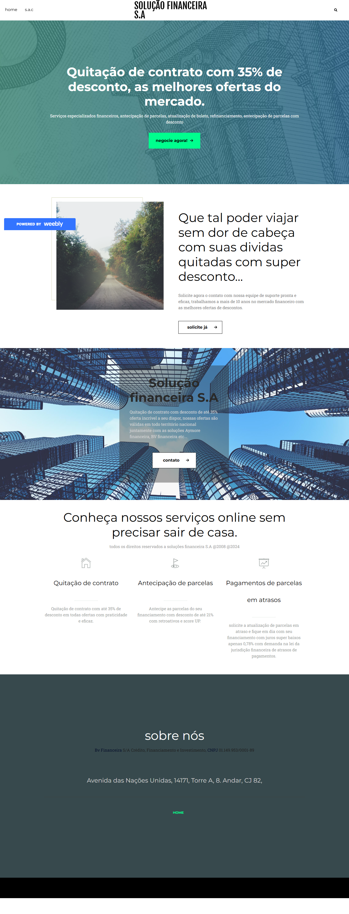

SIMIO · dossiê de candidato · campanha simio-20261119-174043-8bbc · gerado em 2026-11-19T21:22:03+00:00
https://solucaofinanceirasa.weebly.com/
STRONG_INDICATION Prioridade HIGH · Cenário D_STRONG_IMPERSONATION · Revisão humana: PENDING
Este dossiê apresenta indícios para apoio à auditoria. Não constitui conclusão regulatória. As conclusões automatizadas devem ser verificadas contra as evidências brutas abaixo (screenshots, catálogo e arquivos com hash). Conteúdo de terceiros é exibido como texto; links não são clicáveis por segurança.
A página analisada (solucaofinanceirasa.weebly.com) apresenta fortes indícios de uso indevido da marca e personificação (D_STRONG_IMPERSONATION). Embora utilize o título genérico 'Solução Financeira S.A' no topo e cite atuar 'juntamente com as soluções Aymore financeira, BV financeira etc...' [E-TXT-003], a seção 'sobre nós' no rodapé identifica o responsável pela página exclusivamente por meio da razão social oficial ('Bv Financeira S/A Crédito, Financiamento e Investimento'), do CNPJ oficial (01.149.953/0001-89) e do endereço da sede do próprio Banco BV (Av. das Nações Unidas, 14171) [E-HEAD-8, E-HEAD-9, E-TXT-006, E-SHOT-FULL], sem informar qualquer CNPJ de terceiro ou relação de correspondente. Além disso, capta ativamente usuários para serviços críticos de pós-venda ('Quitação de contrato com 35% de desconto', 'atualização de boleto', 'antecipação de parcelas') e exibe menu 's.a.c' [E-FOLD, E-TXT-002], enquadrando-se diretamente nos critérios de personificação e confusão ao consumidor. [Revisor: CONFIRM] A hipótese do analista se sustenta integralmente nas evidências coletadas. A página hospedada em serviço gratuito (solucaofinanceirasa.weebly.com) oferece serviços críticos de pós-venda e cobrança ('Quitação de contrato com 35% de desconto', 'atualização de boleto', 'antecipação de parcelas', 'Pagamentos de parcelas em atrasos') [E-FOLD, E-TXT-002, E-HEAD-7] associados à marca BV Financeira [E-TXT-003]. Além disso, na seção 'sobre nós' no rodapé, identifica-se exclusivamente com a razão social ('Bv Financeira S/A Crédito, Financiamento e Investimento'), o CNPJ (01.149.953/0001-89) e o endereço oficial da instituição [E-HEAD-8, E-HEAD-9, E-TXT-006, E-SHOT-FULL], configurando forte indício de personificação e risco elevado de confusão ao consumidor.

| Ref | Tipo | Local | Conteúdo |
|---|---|---|---|
| E-URL | domain | url | URL final: https://solucaofinanceirasa.weebly.com/ (domínio: solucaofinanceirasa.weebly.com) |
| E-DISC-001 | text | search_index | Índice de busca (grounding): weebly.com — **Solução Financeira S.A. (Weebly 4)** | **Fonte:** `weebly.com` | Avenida das Nações Unidas, 14171"*) como se pertencesse ao próprio site |
| E-SHOT-VIEWPORT | screenshot | viewport | evidence\Cb95aa9d2a4\attempt-1\viewport.png (sha256 28c03dd83eb07d35…) |
| E-SHOT-FULL | screenshot | page | evidence\Cb95aa9d2a4\attempt-1\fullpage.png (sha256 f487397d499e68d1…) |
| E-TITLE | title | head | SOLUÇÃO FINANCEIRA S.A - Home |
| E-META-1 | meta | head | og:site_name: SOLUÇÃO FINANCEIRA S.A |
| E-META-2 | meta | head | og:title: SOLUÇÃO FINANCEIRA S.A |
| E-META-3 | meta | head | og:description: Solicite agora o contato com nossa equipe de suporte pronta e eficaz, trabalhamos a mais de 10 anos no mercado financeiro com as melhores ofertas de descontos. |
| E-HEAD-1 | heading | page | Quitação de contrato com 35% de desconto, as melhores ofertas do mercado. |
| E-HEAD-2 | heading | page | Que tal poder viajar sem dor de cabeça com suas dividas quitadas com super desconto... |
| E-HEAD-3 | heading | page | Solução financeira S.A |
| E-HEAD-4 | heading | page | Conheça nossos serviços online sem precisar sair de casa. |
| E-HEAD-5 | heading | page | Quitação de contrato |
| E-HEAD-6 | heading | page | Antecipação de parcelas |
| E-HEAD-7 | heading | page | Pagamentos de parcelas em atrasos |
| E-HEAD-8 | heading | page | sobre nós |
| E-HEAD-9 | heading | page | Avenida das Nações Unidas, 14171, Torre A, 8. Andar, CJ 82, |
| E-HEAD-10 | heading | page | HOME |
| E-FOLD | text | viewport (acima da dobra) | Home s.a.c SOLUÇÃO FINANCEIRA S.A Quitação de contrato com 35% de desconto, as melhores ofertas do mercado. Serviços especializados financeiros, antecipação de parcelas, atualização de boleto, refinanciamento, antecipação de parcelas com desconto Negocie Agora! Que tal poder viajar sem dor de cabeça com suas dividas quitadas com super desconto... Powered by |
| E-CTA-1 | cta | page | negocie agora! <javascript:;> |
| E-CTA-2 | cta | page | solicite já <javascript:;> |
| E-CTA-3 | cta | page | contato <javascript:;> |
| E-CTA-4 | cta | page | Get Started |
| E-TXT-001 | text | page | Quitação de contrato com 35% de desconto, as melhores ofertas do mercado. |
| E-TXT-002 | text | page | Serviços especializados financeiros, antecipação de parcelas, atualização de boleto, refinanciamento, antecipação de parcelas com desconto |
| E-TXT-003 | text | page | Quitação de contrato com desconto de até 35% oferta incrível a seu dispor, nossas ofertas são válidas em todo território nacional juntamente com as soluções Aymore financeira, BV financeira etc... |
| E-TXT-004 | text | page | Quitação de contrato |
| E-TXT-005 | text | page | Quitação de contrato com até 35% de desconto em todas ofertas com praticidade e eficaz. |
| E-TXT-006 | text | page | Bv Financeira S/A Crédito, Financiamento e Investimento, CNPJ 01.149.953/0001-89 |
| Dimensão | Sinal | Achado | Refs |
|---|---|---|---|
| VISUAL_IDENTITY | NEUTRAL | A página utiliza um template genérico da plataforma gratuita Weebly sem reproduzir a paleta de cores ou elementos gráficos proprietários atuais do Banco BV. | E-SHOT-VIEWPORT E-SHOT-FULL |
| DECLARED_COMMERCIAL_IDENTITY | CONFUSION | Embora o topo da página exiba o nome genérico 'SOLUÇÃO FINANCEIRA S.A', a seção 'sobre nós' no rodapé identifica a entidade exclusivamente como 'Bv Financeira S/A Crédito, Financiamento e Investimento, CNPJ 01.149.953/0001-89' e informa o endereço oficial da instituição na Av. das Nações Unidas, 14171. | E-TITLE E-HEAD-8 E-HEAD-9 E-TXT-006 E-SHOT-FULL |
| CORRESPONDENT_TRANSPARENCY | CONFUSION | Não há qualquer declaração de atuação como correspondente no País ou assessoria independente, nem identificação de CNPJ próprio de terceiro responsável pela página. | E-SHOT-FULL E-TXT-006 |
| INSTITUTIONAL_LANGUAGE | CONFUSION | A página utiliza menu 's.a.c' no topo e assume como 'sobre nós' os dados societários e endereço da própria BV Financeira S/A, além de mencionar atuação conjunta com 'Aymore financeira, BV financeira etc...'. | E-FOLD E-TXT-003 E-TXT-006 E-HEAD-8 |
| LOGO_USAGE | NEUTRAL | Não foi observado o uso de logotipos gráficos do Banco BV na página inspecionada. | E-SHOT-VIEWPORT E-SHOT-FULL |
| SERVICE_JOURNEY | CONFUSION | A jornada é inteiramente voltada à captação para serviços sensíveis de pós-venda ('Quitação de contrato com 35% de desconto', 'Antecipação de parcelas', 'atualização de boleto', 'Pagamentos de parcelas em atrasos'), típicos de atendimento oficial ou falsas centrais de boleto. | E-HEAD-1 E-HEAD-5 E-HEAD-6 E-HEAD-7 E-TXT-002 E-CTA-1 E-CTA-2 |
| CONTACT_CHANNELS | CONFUSION | Apresenta link de navegação denominado 's.a.c' e botões de chamada para ação ('negocie agora!', 'solicite já', 'contato') em página hospedada no domínio gratuito 'solucaofinanceirasa.weebly.com'. | E-URL E-FOLD E-CTA-1 E-CTA-2 E-CTA-3 |
| CONSUMER_CONFUSION | CONFUSION | A combinação de oferta de quitação/atualização de boletos com descontos agressivos e a apropriação da razão social, CNPJ e endereço da sede do Banco BV na seção 'sobre nós' cria forte indício de personificação indevida perante o consumidor. | E-HEAD-1 E-TXT-002 E-TXT-003 E-TXT-006 E-HEAD-8 E-HEAD-9 E-SHOT-FULL |
A página analisada (solucaofinanceirasa.weebly.com) apresenta fortes indícios de uso indevido da marca e personificação (D_STRONG_IMPERSONATION). Embora utilize o título genérico 'Solução Financeira S.A' no topo e cite atuar 'juntamente com as soluções Aymore financeira, BV financeira etc...' [E-TXT-003], a seção 'sobre nós' no rodapé identifica o responsável pela página exclusivamente por meio da razão social oficial ('Bv Financeira S/A Crédito, Financiamento e Investimento'), do CNPJ oficial (01.149.953/0001-89) e do endereço da sede do próprio Banco BV (Av. das Nações Unidas, 14171) [E-HEAD-8, E-HEAD-9, E-TXT-006, E-SHOT-FULL], sem informar qualquer CNPJ de terceiro ou relação de correspondente. Além disso, capta ativamente usuários para serviços críticos de pós-venda ('Quitação de contrato com 35% de desconto', 'atualização de boleto', 'antecipação de parcelas') e exibe menu 's.a.c' [E-FOLD, E-TXT-002], enquadrando-se diretamente nos critérios de personificação e confusão ao consumidor.
Empresa identificada na página sem declaração de relação de correspondente; anunciar produtos da marca não comprova vínculo.
| Tipo | Valor | Ref | Contexto |
|---|---|---|---|
| domain | weebly.com | E-URL | |
| cnpj | 01.149.953/0001-89 | E-TXT-006 | Bv Financeira S/A Crédito, Financiamento e Investimento, CNPJ 01.149.953/0001-89 |
| legal_name | Solução Financeira S.A | E-DISC-001 | |
| institution_name_displayed | Bv Financeira S/A | E-TXT-006 | |
| trade_name | SOLUÇÃO FINANCEIRA S.A | E-META-2 |
Mapeamento indicativo para apoio à auditoria. Não constitui conclusão regulatória; a decisão definitiva pertence à auditoria.
Fonte: NORMATIVE
Art. 14. O contrato de correspondente deve estabelecer: [...] II - vedação à utilização, pelo contratado, de logomarca ou de outros atributos que sejam similares aos adotados pela instituição contratante em suas agências, postos de atendimento, sítio eletrônico na internet, aplicativo ou outras plataformas de comunicação em rede;
Evidência observada: —
Fonte: NORMATIVE
Art. 14. O contrato de correspondente deve estabelecer: [...] III - divulgação ao público, pelo contratado, de sua condição de prestador de serviços à instituição contratante, identificada pelo nome com que é conhecida no mercado, com descrição dos produtos e serviços oferecidos e canais de contato da instituição contratante, inclusive de sua ouvidoria, em local visível, em destaque e em formato legível, por meio de: a) sítio eletrônico do correspondente na internet, acessível na página inicial; b) aplicativo e outras plataformas de comunicação em rede do correspondente; [...]
Hipótese: Divulgação ao público da condição de prestador de serviços à contratante ausente, insuficiente ou sem destaque. A norma disciplina correspondentes contratados; o responsável não foi identificado como correspondente.
Evidência observada: E-CTA-1 E-CTA-2 E-CTA-3 E-FOLD E-HEAD-1 E-HEAD-8 E-HEAD-9 E-SHOT-FULL E-TITLE E-TXT-002 E-TXT-003 E-TXT-006 E-URL
Informação faltante:
Fonte: NORMATIVE
Art. 3º O correspondente atua por conta e sob as diretrizes da instituição contratante, que assume inteira responsabilidade pelo atendimento prestado aos clientes e usuários por meio do contratado.
Hipótese: Atendimento ao público prestado por meio do contratado em condições que podem não seguir as diretrizes da contratante. A norma disciplina correspondentes contratados; o responsável não foi identificado como correspondente.
Evidência observada: E-CTA-1 E-CTA-2 E-CTA-3 E-FOLD E-HEAD-1 E-HEAD-5 E-HEAD-6 E-HEAD-7 E-TXT-002 E-TXT-003 E-URL
Informação faltante:
Se o responsável não for correspondente contratado, os indícios podem caracterizar uso indevido de marca ou fraude, fora do escopo da Res. 4.935: avaliar encaminhamento às áreas jurídica/segurança.
Limitações: requisitos contratuais/internos não fornecidos: mapeamento limitado ao texto normativo
Decisão: CONFIRM → STRONG_INDICATION / HIGH
A hipótese do analista se sustenta integralmente nas evidências coletadas. A página hospedada em serviço gratuito (solucaofinanceirasa.weebly.com) oferece serviços críticos de pós-venda e cobrança ('Quitação de contrato com 35% de desconto', 'atualização de boleto', 'antecipação de parcelas', 'Pagamentos de parcelas em atrasos') [E-FOLD, E-TXT-002, E-HEAD-7] associados à marca BV Financeira [E-TXT-003]. Além disso, na seção 'sobre nós' no rodapé, identifica-se exclusivamente com a razão social ('Bv Financeira S/A Crédito, Financiamento e Investimento'), o CNPJ (01.149.953/0001-89) e o endereço oficial da instituição [E-HEAD-8, E-HEAD-9, E-TXT-006, E-SHOT-FULL], configurando forte indício de personificação e risco elevado de confusão ao consumidor.
| Tema | Severidade | Questionamento | Refs |
|---|---|---|---|
| multi_bank_intermediation | NONE | O texto menciona atuar 'juntamente com as soluções Aymore financeira, BV financeira etc...' e utiliza o nome genérico 'Solução Financeira S.A' no cabeçalho, mas no rodapé ('sobre nós') apropria-se exclusivamente da razão social, do CNPJ (01.149.953/0001-89) e do endereço da sede do Banco BV, sem identificar nenhuma empresa terceira real ou declaração de correspondente. | E-TITLE E-TXT-003 E-TXT-006 E-HEAD-8 E-HEAD-9 E-SHOT-FULL |
| Fonte | Consulta / hipótese | URL original | Título / trecho |
|---|---|---|---|
| grounding | perfis, páginas ou links públicos em Google Meu Negócio mantidos por terceiros que oferecem financiamento, quitação ou crédito usando a marca Banco BV (bv financeira) como se fossem um canal oficial ou representante direto do banco H6-platform:Google Meu Negócio | https://solucaofinanceirasa.weebly.com/ | weebly.com **Solução Financeira S.A. (Weebly 4)** | **Fonte:** `weebly.com` | Avenida das Nações Unidas, 14171"*) como se pertencesse ao próprio site |
Original: https://solucaofinanceirasa.weebly.com/
Final: https://solucaofinanceirasa.weebly.com/
| Artefato | Caminho | SHA-256 | Bytes |
|---|---|---|---|
| screenshot_viewport | evidence\Cb95aa9d2a4\attempt-1\viewport.png | 28c03dd83eb07d3552945289bf1375d029d6e5ba7b1f46b20da4415f3d34b9d1 | 775432 |
| screenshot_full | evidence\Cb95aa9d2a4\attempt-1\fullpage.png | f487397d499e68d18743e4ffcdf487aecb0195892507db0a717c36e8040a8dce | 2565311 |
| html | evidence\Cb95aa9d2a4\attempt-1\page.html.txt | 12876fb7f724ac71bda7f38ceed48e3f785919d8cad1dbea5cf8c01c6e9af7af | 56305 |
| text | evidence\Cb95aa9d2a4\attempt-1\text.txt | 6df8b5e28a75016209ed77fc2ba2184c29b788aa3a926b2dbda62238782dc787 | 1628 |
| page_data | evidence\Cb95aa9d2a4\attempt-1\page.json | 942604b61a8694f633ee08c9cc1f107d27141d8da4ef6e3e63d4d968e5a14888 | 6515 |
| Quando | De | Para | Nota |
|---|---|---|---|
| 2026-11-19T18:10:11+00:00 | DISCOVERED | QUEUED | prioritised (score 0.5) |
| 2026-11-19T18:28:11+00:00 | QUEUED | COLLECTING | |
| 2026-11-19T18:28:23+00:00 | COLLECTING | COLLECTED | |
| 2026-11-19T18:28:23+00:00 | COLLECTED | ANALYZING | |
| 2026-11-19T18:29:09+00:00 | ANALYZING | REVIEWING | |
| 2026-11-19T18:29:27+00:00 | REVIEWING | COMPLETED |